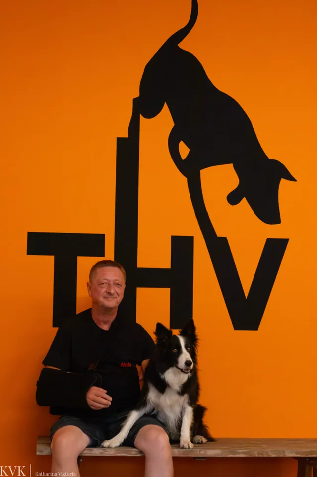
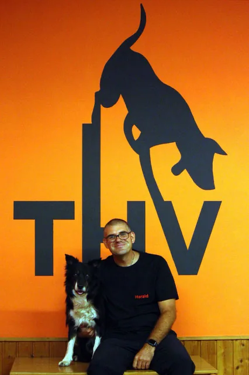
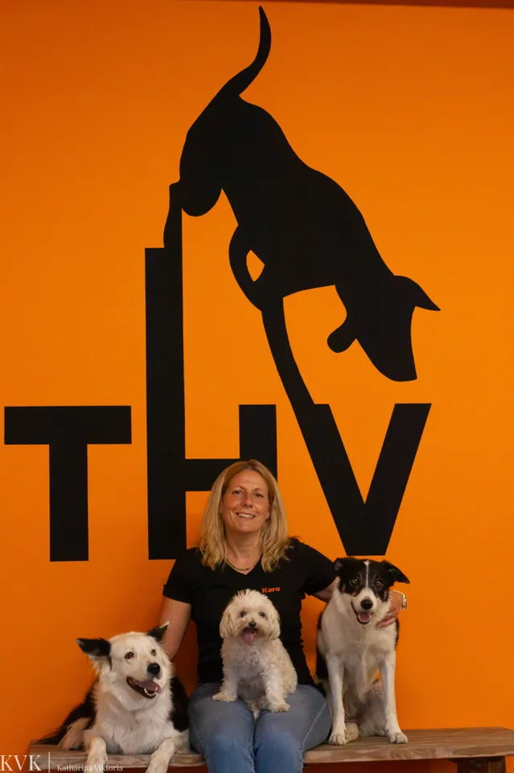
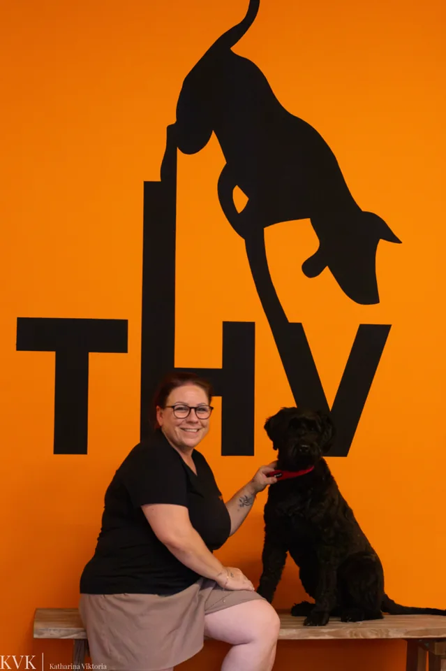
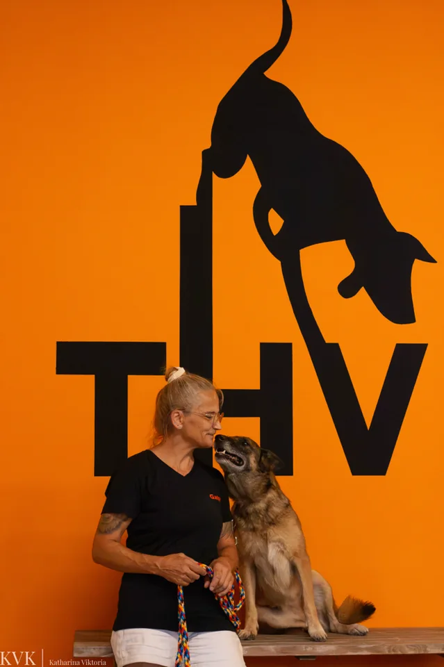

Sari
Agility, Sachkundenachweis

Agility, Sachkundenachweis

Grundkurs, Unterordnung, Sachkundenachweis

Social Walk, Unterordnung, Agility Turniergeher, Sachkundenachweis

Agility

Hoopers

Agility

Welpen- und Junghundekurs, Grundkurs

Social Walk, Unterordnung Anfänger

Hoopers, Grundkurs

Grundkurs, Unterordnung Anfänger
Unterordnung Fortgeschritten

Hoopers, Welpen- und Junghundekurs
Obfrau, Schriftführer-Stellvertreterin
Obfrau-Stellvertreter
Kassierin
Hauptabrichtewart
Schriftführerin
Beisitzer
Beisitzer
Beisitzerin
Vorstand laut veröffentlichter Vereinsliste. Änderungen bitte direkt beim Verein erfragen.